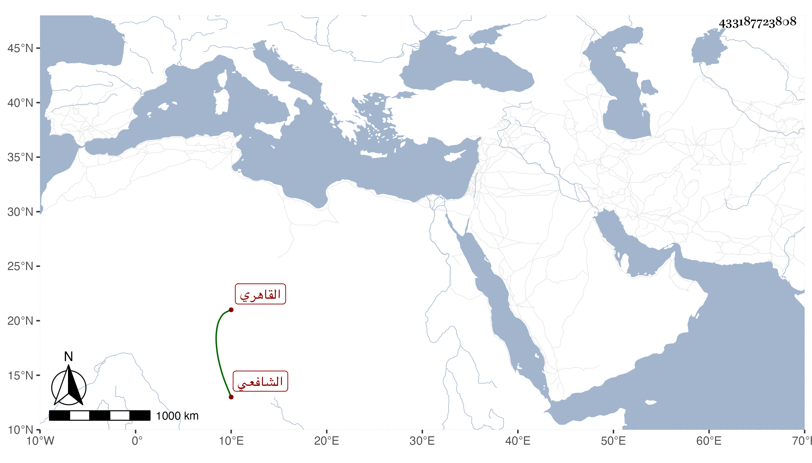

0902Sakhawi.DawLamic.ITO20230111-ara1.EIS1600.433187723808
Biography ID: 433187723808
أحمد بن عبد الرحمن بن عبد الغني بن شاكر بن ماجد شهاب الدين بن القاضي مجد الدين بن فخر الدين القاهري الشافعي ويعرف كسلفه بابن الجيعان . نشأ في كنف أبيه فقرأ القرآن وغيره ، وتخرج في المباشرة قليلا وباشر الكتابة في الخانقاه البيبرسية فلم يحمده ضعفاء أهلها وكان مترفعا لا لمعنى ، وقد حج غير مرة . مات وقد جاز الأربعين في ليلة الجمعة خامس عشري ذي القعدة سنة ثمان وثمانين وصلى عليه من الغد بعد صلاة الجمعة بالأزهر ثم دفن بتربتهم في مشهد حافل واستقر بعده في البيبرسية أخوه عبد الرحيم خاتمة بني أبيه عفا الله عنه .
